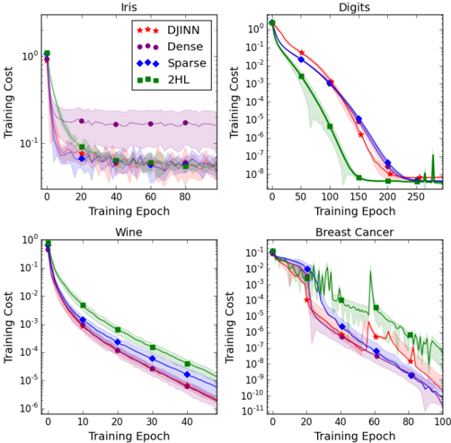

Resumen General
El artículo presenta un algoritmo novedoso llamado DJINN (Deep Jointly-Informed Neural Networks), que automatiza la construcción e inicialización de redes neuronales profundas utilizando la estructura de árboles de decisión previamente entrenados. El método propuesto:
Entrena uno o varios árboles de decisión (o un bosque aleatorio) sobre los datos.
Mapea la estructura de cada árbol a una arquitectura de red neuronal profunda.
Inicializa los pesos de la red de manera que reflejen las dependencias aprendidas por el árbol.
Afina la red mediante retropropagación (backpropagation) para mejorar su rendimiento.
El resultado es un modelo que combina la facilidad de uso y robustez de los árboles de decisión con la flexibilidad y poder predictivo de las redes neuronales profundas. DJINN actúa como un "warm-start" (inicio cálido) para el entrenamiento, lo que acelera la convergencia y a menudo produce modelos más precisos que los inicializados aleatoriamente.
Explicación Detallada por Secciones
1. Introducción
Las redes neuronales son potentes pero difíciles de configurar y entrenar (arquitectura, hiperparámetros, inicialización).
Los árboles de decisión (y bosques aleatorios) son más simples y robustos, pero tienen limitaciones (divisiones axis-aligned, alto consumo de memoria en ensembles).
Trabajos anteriores mapeaban árboles a redes neuronales poco profundas (2 capas ocultas), que pueden volverse muy anchas y difíciles de entrenar.
DJINN propone un mapeo a redes profundas, que pueden capturar relaciones no lineales más complejas.
- Algoritmo DJINN
El proceso se divide en 3 pasos:
A. Construcción del árbol de decisión:
Se entrena un árbol (o ensemble como Random Forest) con una profundidad máxima controlada (hiperparámetro a ajustar).
B. Mapeo del árbol a una red neuronal profunda:
Este es el núcleo del algoritmo. La estructura del árbol determina la arquitectura de la red:
La profundidad máxima de las ramas (D_b) del árbol define el número de capas ocultas.
El número de neuronas por capa se calcula sumando las neuronas de la capa anterior más el número de ramas en el nivel actual del árbol (n(l) = n(l-1) + N_b(l)). Esto esencialmente "copia" la capa anterior y añade neuronas para las nuevas decisiones.
Inicialización de pesos:
Los pesos que preservan el valor de una variable de entrada (hasta que deja de usarse en el árbol) se inicializan a 1.
Los pesos que representan decisiones (como las divisiones en un nodo) se inicializan con la distribución normal de Xavier, que ayuda a mantener la escala de los gradientes.
Las conexiones que llevan el valor de una hoja (predicción) a la salida también se inicializan con Xavier.
Este esquema crea una red inicialmente dispersa (muchos pesos en cero) que refleja los caminos de decisión del árbol.
C. Optimización (Fine-Tuning):
La red inicializada se entrena luego con backpropagation usando un optimizador (Adam) y funciones de pérdida estándar (MSE para regresión, entropía cruzada para clasificación).
La función de activación ReLU permite que las neuronas preserven valores de capas anteriores.
- Resultados y Comparaciones
El artículo compara DJINN con varios métodos:
Redes de 2 capas ocultas (2HL) inicializadas con árboles: DJINN obtiene mejor rendimiento en problemas de regresión, a menudo con mejora estadísticamente significativa. En clasificación, el rendimiento es similar.
Inicializaciones aleatorias (densas y dispersas): DJINN funciona como un warm-start efectivo, comenzando con un error más bajo y convergiendo más rápido (Figura 4). Esto demuestra que no solo la dispersidad de los pesos iniciales es importante, sino también su ubicación informada por el árbol.
Optimización bayesiana de hiperparámetros: DJINN logra un rendimiento predictivo comparable o superior en la mayoría de los conjuntos de datos, pero con un costo computacional mucho menor. La optimización de hiperparámetros requiere entrenar cientos de arquitecturas candidatas, mientras que DJINN solo necesita entrenar unos pocos árboles y luego las redes inicializadas.
-
Limitaciones y Observaciones
Clasificación vs. Regresión: La ventaja de DJINN es más clara en regresión, donde los árboles suelen ser más profundos y proporcionan una estructura de dependencia más significativa para la inicialización.
Datos de alta dimensión (como imágenes): Para problemas con muchas características (píxeles), un árbol superficial no puede proporcionar una buena inicialización. Se sugiere usar primero un autoencoder o capas convolucionales para comprimir los datos antes de aplicar DJINN.
Arquitectura no óptima: DJINN no busca la arquitectura óptima, sino una arquitectura buena e informada rápidamente. Los resultados muestran que esto es suficiente para un rendimiento competitivo.
-
Conclusiones
DJINN es un algoritmo de "caja negra" efectivo y eficiente para crear redes neuronales profundas.
Combina la usabilidad de los árboles de decisión (pocos hiperparámetros) con la potencia de las redes profundas.
Proporciona una inicialización informada ("warm-start") que acelera el entrenamiento y mejora el rendimiento final.
Es computacionalmente más económico que los métodos de optimización de arquitectura basados en búsqueda.
Es especialmente adecuado para la creación de modelos sustitutos (surrogate models) de sistemas físicos complejos.
Conceptos Clave para Recordar
Warm-Start: Iniciar el entrenamiento de un modelo desde un punto inicial bueno (en este caso, basado en un árbol) en lugar de empezar desde cero con pesos aleatorios.
Mapeo Estructural: Convertir la secuencia de decisiones de un árbol (ramas, hojas) en capas, neuronas y conexiones de una red neuronal.
Inicialización Informada: Los pesos no se eligen al azar, sino para imitar el comportamiento inicial del árbol de decisión.
Compensación (Trade-off): DJINN sacrifica la búsqueda de la arquitectura óptima absoluta a cambio de una muy buena arquitectura obtenida con un costo computacional mínimo.
Espero que este resumen te haya sido útil. ¡Es un paper muy interesante que une dos mundos clásicos del Machine Learning!
Figuras del Paper (5)

Fig. 1. Illustration of the DJINN mapping for a simple decision tree. Gray neurons are initially unconnected; if biases are randomly initialized to negative values, the neurons cannot learn and are thus not included in the final DJINN architecture.
Fig. 1. Illustration of the DJINN mapping for a simple decision tree. Gray neurons are initially unconnected; if biases are randomly initialized to negative values, the neurons cannot learn and are thus not included in the final DJINN architecture.

Fig. 2. Truth tables, decision trees, and DJINN-initialized neural networks for logical operations IF(x), OR, and XOR. Decision paths in the tree are mapped to paths through the neural network, indicated by color. Gray neurons are initially unconnected; if biases are randomly initialized to negative values, the neurons cannot learn and are thus not included in the final DJINN architecture.
Fig. 2. Truth tables, decision trees, and DJINN-initialized neural networks for logical operations IF(x), OR, and XOR. Decision paths in the tree are mapped to paths through the neural network, indicated by color. Gray neurons are initially unconnected; if biases are randomly initialized to negative values, the neurons cannot learn and are thus not included in the final DJINN architecture.

Fig. 3. MSE (normalized to the MSE of one tree) as a function of the number of trees included in the DJINN ensemble for various regression datasets. The performance of the model improves as the number of trees is increased.
Fig. 3. MSE (normalized to the MSE of one tree) as a function of the number of trees included in the DJINN ensemble for various regression datasets. The performance of the model improves as the number of trees is increased.

Fig. 4. Cost (MSE for data scaled to (0,1)) as a function of training epoch for regression datasets. DJINN weights are observed to start at, and often converges to, a lower cost than the shallow network, or networks with DJINN architecture and other weight initialization techniques.
Fig. 4. Cost (MSE for data scaled to (0,1)) as a function of training epoch for regression datasets. DJINN weights are observed to start at, and often converges to, a lower cost than the shallow network, or networks with DJINN architecture and other weight initialization techniques.

Fig. 5. Cost (cross entropy with logits) as a function of training epoch for classification datasets.
Fig. 5. Cost (cross entropy with logits) as a function of training epoch for classification datasets.